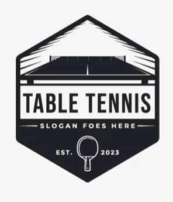

乒乓球俱樂部比賽系統
返回首頁
會員管理
比賽系統
比賽設置
比賽局數
1局1勝
3局2勝
5局3勝
7局4勝
選手 1
-- 選擇選手 --
選手 2
-- 選擇選手 --
開始比賽
比賽進行中
第 1 局
0 - 0
選手 1
直板/反膠
勝率: 75%
0
得分
選手 2
橫板/正膠
勝率: 82%
0
得分
撤銷
結束比賽
比賽結果
勝利者:
選手名稱
選手 1
0
vs
選手 2
0
詳細比分
保存結果
新比賽
確認結束比賽
您確定要結束當前比賽嗎？比賽將被記錄為未完成。
取消
結束比賽
第 1 局結束
選手 1
11
:
選手 2
9
下一局將在
5
秒後開始